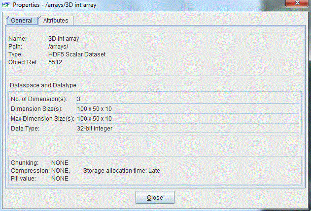
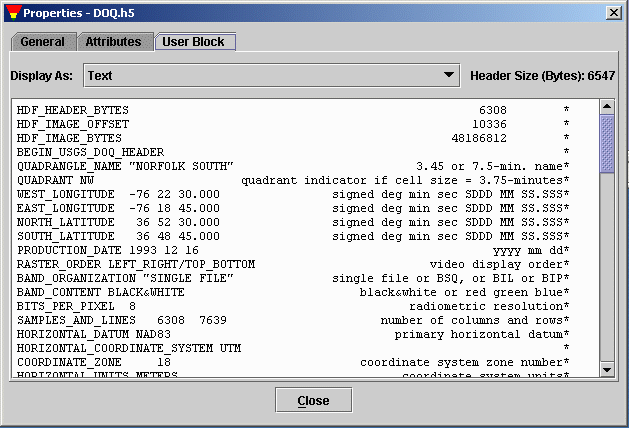
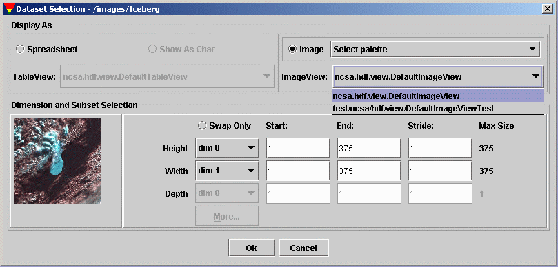

[Index]
[1]
[2]
[3]
[4]
[5]
[6]
[7]
Chapter 2: Getting Started
This chapter assumes that you have installed HDFView and, with Chapter 3,
The HDF Object Model, is designed to help you get to the point where
you are actually looking at HDF datasets.
2.1 The Main Window
When you first open HDFView, the HDFView window appears with an empty tree
and data panel. After you open an HDF file, the structure of the file is displayed
in the Tree Panel. The content of a data object is displayed in the Data panel
by openning the data object.
The main window consists of five components: Menubar, Tool bar, File bar,
Tree panel, Data Panel and Info panel.

The Main Window
-
menubar
-
The menubar is where you choose menu commands.
-
Tool bar
-
The tool bar displays buttons that are shortcuts for commonly performed
tasks. such as opening and closing a file; zooming in/out of an image;
flipping forward and backward through data pages.
-
File bar
-
The file bar is used to enter file/file path to open. Valid file names include
absolute file name, file path, and url to remote file such as,
http://hdf.ncsa.uiuc.edu/hdf-java-html/hdf5_test.h5
-
Tree panel
-
The tree panel displays the group structure of an HDF file as a tree of
"folders". Other objects such as dataset and image are displayed as leaf
object in the tree.
-
Data panel
-
The data panel is where the content of data object is displayed at. All
the data windows are laid out in the data panel. You can display more one
documents in the data panel.
-
Info panel
-
The Info panel is used to displays status informaton or metadata. Click tab
"Log Info" or "Metadata" to status information or metadata respectively. Status
message includes file or data information, warning or error message and status
of data processing. Info panel is also used for quick view metadata of the selected
object in the tree view when "Metadata" tab is selected.
Menubar
The menubar is at the top of the main window. You can select a menu command
from menu items or press key combination from keyboard to invoke the menu
item's action without navigating the menu hierarchy. For example, to exit
the HDFView, you can either press "Ctrl+Q" from the keyboard or select Exit
item from the File menu.
-
File menu
-
File menu contains commands to open/close files, create and save files, and
exit the HDFView. It also displays a list of most recent files for quick
reopen.

File Menu
-
Tools menu
-
Tools menu containts a list of commands to lauch tools such as
HDF4 to HDF5 conversiont, JPEG/TIFF/PNG to HDF4/5, and user options. The
current version has only one item: user options. The user option
command launch dialog to change user preferences: the path of the
user's guide, font size, and delimiter. When you lanuch the user's
guide command from the "Help" menu, the help tool opens the user's guide
specified by the path of the user's guide. The font size will be
used to specify the display font size of the tree view and others.
The data delimiter determines the seperator used when you save data
values into text files or paste data values from other application
to HDFView spreadsheet.

Tools menu
-
Window menu
-
Window menu displays a list of data windows along with close, tile, and
cascade window commands. You can bring a data window to front by choosing
the data name from the window menu. The "Cascade" and "Tile" commands will
cascade or tile current open windows. The "Close" command closes the current
active data window. The "Close All" closes all the open windows. At the bottom
of the windows menu is a list of current open data windows. Select one of the
items in the list will bring the window to the front.

Window Menu
-
Help menu
-
Help menu displays this User's guide, the version of the HDF4 and HDF5
libraries and the About box.

Help Menu
2.2 Opening a File
You can either select the "open" command from file menu or click "open"
icon in the tool bar to invoke the local file manager and select a file
to open from the local file manager. "Open Read-only" opens file with read
only permission and editing functions are disabled. Changes are not allowed
when a file is open with read only.

Local file manager (Windows)
2.3 Tree View of File Hierarchy
An HDF file contains one or more objects, optionally grouped in a hierarchy.
For general information about the structure and contents of HDF files,
see the HDF documentation at
http://hdf.ncsa.uiuc.edu/HDF5/doc/ and
http://hdf.ncsa.uiuc.edu/doc.html.
The structure of the file is displayed in the Tree panel on the left. Data
objects are represented as icons, groups are represented by folders. An
HDF file may contain groups, dataset (arrays), named datatypes and links.
The hierarchy of the file can be navigated by selecting folders to "open"
a group, which displays the objects contained by the group. When an object
is selected, the data is displayed appropriately in the data panel on the
right.
You can open multiple files at one time. Files are listed as root objects
in the tree. The following figure illustrates that an HDF4 file, annras.hdf,
and an HDF5 file, hdf5_test.h5, are currently open.

Tree view
2.4 Status Information
Short status information and feedback messages are displayed in the Status
Bar. The information and message show the result of user actions.
2.5 HDF Metadata
To see the metadata of a data object, you click the right button of the
mouse on the data object. The metadata dialog pops up with metadata information
such as name, type, attributes, data type, data space, and members.

General Properties of Dataset
To view user block in text, right-click the file node (the root group) to popup
the metadata dialog. Click the "User Block" tab in the metadata dialog to show
the user block information in text.

General Properties of Dataset
2.6 Select GUI modules
HDFView displays data with default GUI module when openning dataset
by default. You can set default modules from "Tools" --> "User Options" --> "Default Module".
Change of default TreeView will take effect only after you restart the HDFView.

Set Default Modules
By default, data or attribute is displayed with default modules. You can also select specific
module for display. To select a module, use "Open As" option from the popup menu to choose
opotional TableView or ImageView. Use "Show Property As" to choose a MetadataView.

Select an ImageView

The National Center for Supercomputing Applications
University
of Illinois at Urbana-Champaign

Last Modified: 11/21/2005